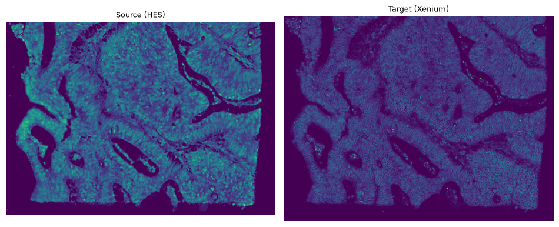
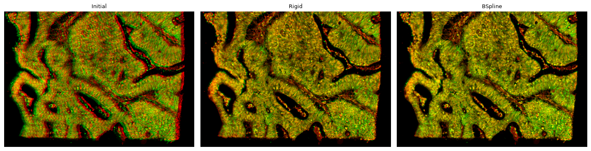
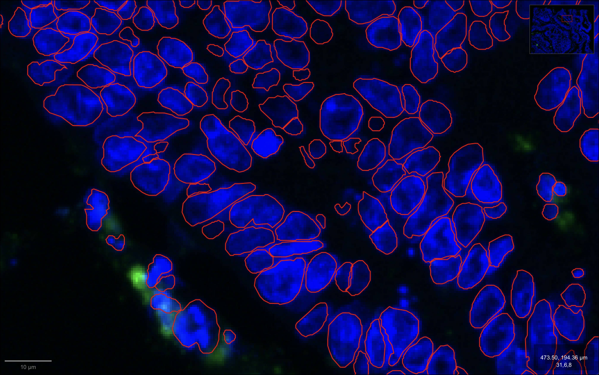
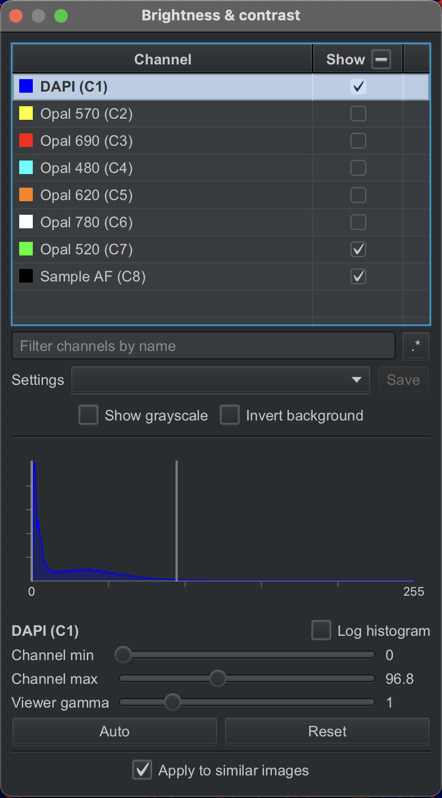
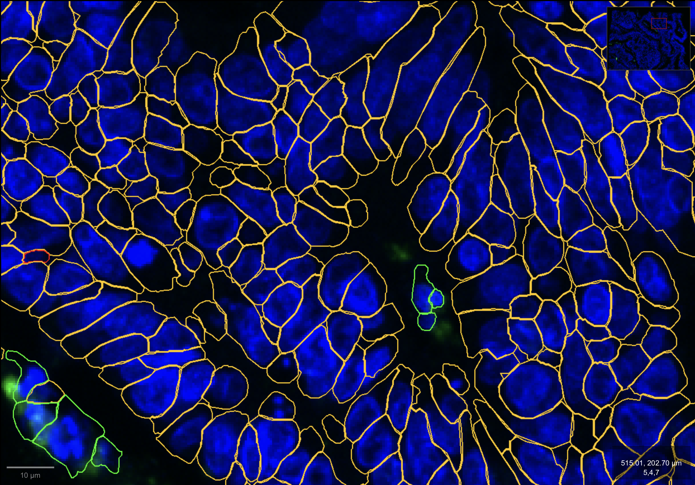
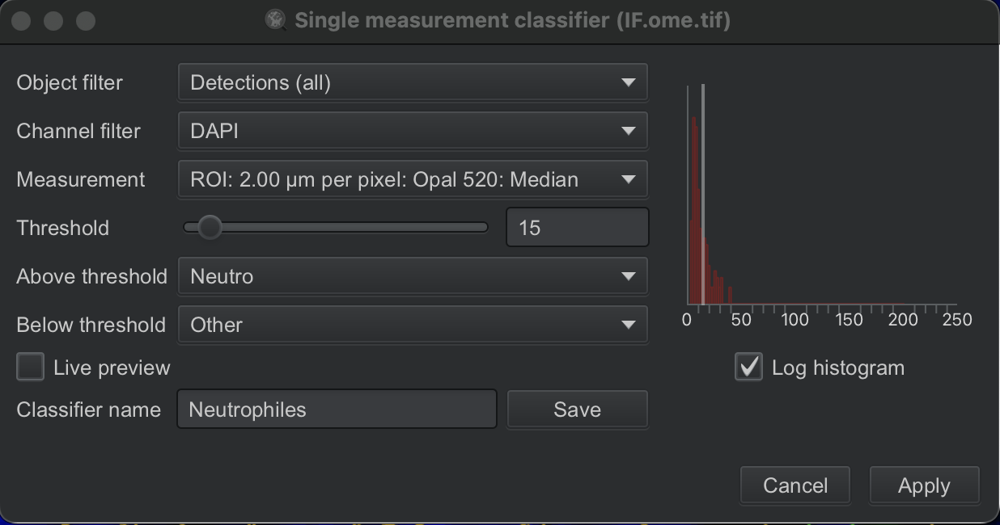
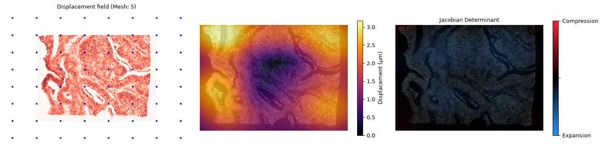
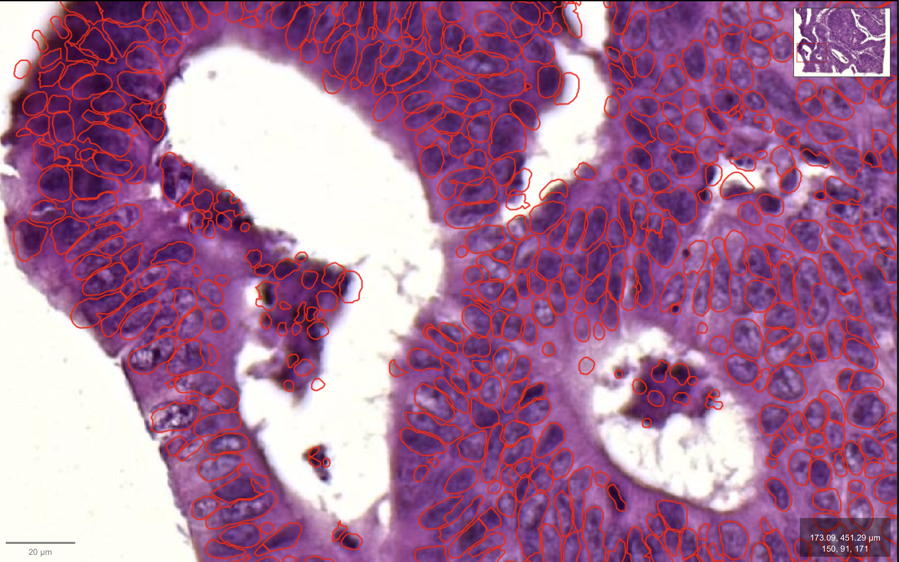

Code
import xenium_align as xa
from pathlib import Path
import os
import matplotlib.pyplot as pltThis notebook walks through the full alignment pipeline on a small region of interest (ROI) extracted from the whole slide. Working on a smaller image keeps runtime low and makes it easier to inspect results at cell-level detail, making this the best starting point to understand each step of the pipeline.
Note that a few parameters differ slightly from the whole-slide notebook (spacing, channel combination for the H&E–Xenium alignment), as they were chosen to work best at this smaller scale.
import xenium_align as xa
from pathlib import Path
import os
import matplotlib.pyplot as pltHere we align the Xenium slide with both the post-Xenium mIF and post-Xenium H&E images, since the same physical slide was imaged across all three technologies.
But each of these alignments can be run independently, if you have only one of the two post-Xenium images (H&E or mIF), simply run the corresponding section.
# IF
IF_IMG_PATH = Path("../toy_dataset/IF.ome.tif")
# XENIUM
XE_DIR = Path("../toy_dataset/XENIUM/")
XE_IMG_PATH = xa.data.get_xenium_image_paths(XE_DIR)
# Output directory
output_dir_mif = Path("../toydataset_mIF_results")
output_dir_mif.mkdir(parents=True, exist_ok=True)To avoid long processing times, we load each image at a reduced resolution. Since the IF and Xenium images are acquired on different microscopes, they have different native pixel spacings (µm/px). Each image’s resolution level is therefore selected automatically to match a common target resolution (resolution level closest to 2 µm/px by default), chosen as a trade-off between alignment accuracy and computing time.
For this toy dataset, since the images to align are smaller, we use a finer target resolution (resolution level closest to 1 µm/px).
For both Xenium and post-Xenium mIF we exctract the DAPI channel.
meta_source, meta_target, offset_x, offset_y, proc_source, proc_target = xa.data.load_images_and_metadata_mif(IF_IMG_PATH, XE_DIR, target_spacing_um = 1)[INFO] (xenium_align.data.io) IF.ome.tif: native spacing = 0.4968 um/px, level 0 selected (spacing=0.4968 um/px, target=1)
[INFO] (xenium_align.data.io) Loading IF.ome.tif...
[INFO] (xenium_align.data.io) Level 0: - Shape: (8, 1303, 1701) (IYX)
[INFO] (xenium_align.data.io) ch0000_dapi.ome.tif: native spacing = 0.2125 um/px, level 2 selected (spacing=0.8498 um/px, target=1)
[INFO] (xenium_align.data.io) Loading ch0000_dapi.ome.tif...
[INFO] (xenium_align.data.io) Level 2: - Shape: (751, 987) (YX)
[INFO] (xenium_align.data.preprocess) Flipping proc_targetThis helps assess how similar the two images are before running the registration.
fig, axes = plt.subplots(1, 2, figsize=(10, 5))
axes[0].imshow(proc_source)
axes[0].axis('off')
axes[0].set_title('Source (mIF)', fontsize=10)
axes[1].imshow(proc_target)
axes[1].axis('off')
axes[1].set_title('Target (Xenium)', fontsize=10)
plt.tight_layout()
plt.savefig(f'{output_dir_mif}/processed_images.png', bbox_inches='tight', pad_inches=0)
# Deformation resolution
ms = 5
# Load source and target images
fixed = xa.data.get_sitk_image(proc_source, meta_source)
moving = xa.data.get_sitk_image(proc_target, meta_target)
# Run registration
moving_rigid, tx_rigid, moving_bspline, tx_bspline = xa.module.run_registration(fixed, moving, output_dir_mif, ms)
# Visualize results
xa.plot.registration_summary(fixed, moving, moving_rigid, moving_bspline, output_dir_mif, ms)
xa.plot.local_deformations(fixed, tx_bspline, output_dir_mif, ms)[INFO] (xenium_align.module.registration) Running rigid registration...
[INFO] (xenium_align.module.registration) Running bspline registration...

NOTE: The Transform section can be re-run independently of the Registration section (each registration run saves a .tfm transformation file with its mesh size appended to the filename). However, the “Load images and metadata” section must be executed first to ensure metadata (e.g., meta_source, meta_target, offset_x, offset_y) are available. You also need to specify ms, matching the mesh size of the registration run you want to use.
We can transform the segmentation of mIF to the Xenium slide.
Here we did the segmentation using Positive cell detection in QuPath on DAPI mean and with a treshold at 17 (0µm cell expansion). Segmentation can be improved using other tools.
mif_nucleus_geojson = Path("../toy_dataset/IF_nucleus_coords.geojson")
## Transform coordinates
xa.module.apply_sitk_transform(mif_nucleus_geojson, output_dir_mif, meta_source, meta_target, ms, offset_x, offset_y)[INFO] (xenium_align.module.transform) Transformed cells (sitk) exported to ../toydataset_mIF_results/transformed_5.geojsonNext, we can use spatial join to match cells between mIF and Xenium.
We can also transform nucleus segmentation from Xenium to the post-Xenium mIF slide (using the inverse transform).
xe_nucleus_geojson = Path("../toy_dataset/XENIUM_nucleus_coords.geojson")
## Transform coordinates
xa.module.apply_sitk_transform(xe_nucleus_geojson, output_dir_mif, meta_source, meta_target, ms, offset_x, offset_y, inverse = True)[INFO] (xenium_align.module.transform) Computing inverse transform field...
[INFO] (xenium_align.module.transform) Transformed cells (sitk) exported to ../toydataset_mIF_results/transformed_inverse_5.geojsonAnd then check the alignment accuracy (how well the transformed nucleus segmentation match the DAPI signal of the post-Xenium mIF slide) :

Note: Since both post-Xenium H&E and mIF are available for this sample, the mIF panel is kept minimal : only one marker in addition to DAPI (Opal 520). So if you want to visualize the transformed nucleus of Xenium in the mIF slide with QuPath, show only the DAPI and Opal 520 channels.

In the same way, we can transform the cells segmented from the Xenium multimodal segmentation into the post-Xenium mIF space, in order to annotate the cells (instead of relying on classical nuclear expansion).
xe_nucleus_geojson = Path("../toy_dataset/XENIUM_cells_coords.geojson")
## Transform coordinates
xa.module.apply_sitk_transform(xe_nucleus_geojson, output_dir_mif, meta_source, meta_target, ms, offset_x, offset_y, inverse = True)[INFO] (xenium_align.module.transform) Computing inverse transform field...
[INFO] (xenium_align.module.transform) Transformed cells (sitk) exported to ../toydataset_mIF_results/transformed_inverse_5.geojsonOnce transformed, the Xenium cell boundaries can be used to extract mIF signal directly. Since each cell keeps its original Xenium ID through the transformation, the mIF annotation can then be joined back onto the cells in their original Xenium coordinates with a simple join on cell ID.

On this example, annotation is done directly in QuPath. The transformed cell boundaries are imported as detection objects, which is required for per-cell measurements and thresholding in QuPath.
Intensity features (mean, median, etc.) are then computed per channel on each cell’s own ROI via Analyze -> Calculate features -> Add intensity features....
Cells are finally classified using QuPath’s Object classification -> Create single measurement classifier..., thresholding at 15 on Opal 520: Median to assign each cell a class (Neutrophils vs. Others).

# HE
HE_IMG_PATH = Path("../toy_dataset/HE.ome.tif")
# XENIUM
XE_DIR = Path("../toy_dataset/XENIUM/")
XE_IMG_PATH = xa.data.get_xenium_image_paths(XE_DIR)
# Output directory
output_dir_he = Path("../toydataset_HE_results")
output_dir_he.mkdir(parents=True, exist_ok=True)To avoid long processing times, we load each image at a reduced resolution. Since the H&E and Xenium images are acquired on different microscopes, they have different native pixel spacings (µm/px). Each image’s resolution level is therefore selected automatically to match a common target resolution (2 µm/px by default), chosen as a trade-off between alignment accuracy and computing time.
For HE/HES images, we try to extract only the hematoxylin channel using separate_stains from skimage.color. This single-channel nuclear signal is more directly comparable to the DAPI/nuclear channel of the Xenium IF image, which improves registration between the two modalities.
However, color deconvolution is not perfectly specific to HES (HED matrix), some signal from other channels leaks into it. To match this broader signal, we therefore combine multiple Xenium IF channels : DAPI, ATP1A1, and 18S (rather than DAPI alone).
You can also use DAPI alone, or any combination of two channels, if preferred, each combination is automatically saved to its own output folder named after the channels used.
For this toy dataset, since the images to align are smaller, we use a finer target resolution (1 µm/px). We also use only the DAPI and ATP1A channels of the Xenium IF here, as this combination gives better alignment results at this scale.
meta_source, meta_target, offset_x, offset_y, proc_source, proc_target, combo_dir, combo_name = xa.data.load_images_and_metadata_he(HE_IMG_PATH, XE_DIR, output_dir_he, target_spacing_um = 1, combo_name = "DAPI_ATP1A")[INFO] (xenium_align.data.io) HE.ome.tif: native spacing = 0.3273 um/px, level 2 selected (spacing=1.3092 um/px, target=1)
[INFO] (xenium_align.data.io) Loading HE.ome.tif...
[INFO] (xenium_align.data.io) Level 2: - Shape: (480, 669, 3) (YXS)
[INFO] (xenium_align.data.io) ch0000_dapi.ome.tif: native spacing = 0.2125 um/px, level 2 selected (spacing=0.8498 um/px, target=1)
[INFO] (xenium_align.data.io) Loading ch0000_dapi.ome.tif...
[INFO] (xenium_align.data.io) Level 2: - Shape: (751, 987) (YX)
[INFO] (xenium_align.data.io) Loading ch0001_atp1a1_cd45_e-cadherin.ome.tif...
[INFO] (xenium_align.data.io) Level 2: - Shape: (751, 987) (YX)
[INFO] (xenium_align.data.io) Loading ch0002_18s.ome.tif...
[INFO] (xenium_align.data.io) Level 2: - Shape: (751, 987) (YX)
[INFO] (xenium_align.data.preprocess) Combine ['DAPI', 'ATP1A']...This helps assess how similar the two images are before running the registration.
fig, axes = plt.subplots(1, 2, figsize=(10, 5))
axes[0].imshow(proc_source)
axes[0].axis('off')
axes[0].set_title('Source (mIF)', fontsize=10)
axes[1].imshow(proc_target)
axes[1].axis('off')
axes[1].set_title('Target (Xenium)', fontsize=10)
plt.tight_layout()
plt.savefig(f'{output_dir_mif}/processed_images.png', bbox_inches='tight', pad_inches=0)# Deformation resolution
ms = 5
# Load source and target images
fixed = xa.data.get_sitk_image(proc_source, meta_source)
moving = xa.data.get_sitk_image(proc_target, meta_target)
# Run registration
moving_rigid, tx_rigid, moving_bspline, tx_bspline = xa.module.run_registration(fixed, moving, combo_dir, ms)
# Visualize results
xa.plot.registration_summary(fixed, moving, moving_rigid, moving_bspline, combo_dir, ms)
xa.plot.local_deformations(fixed, tx_bspline, combo_dir, ms)[INFO] (xenium_align.module.registration) Running rigid registration...
[INFO] (xenium_align.module.registration) Running bspline registration...

NOTE: The Transform section can be re-run independently of the Registration section (each registration run saves a .tfm transformation file with its mesh size appended to the filename). However, the “Load images and metadata” section must be executed first to ensure metadata (e.g., meta_source, meta_target, offset_x, offset_y, combo_dir) are available. You also need to specify ms, matching the mesh size of the registration run you want to use.
We can transform the segmentation of H&E to the Xenium slide.
Here we did the segmentation using Positive cell detection in QuPath on Eosin OD mean and with a treshold at 0.01 (0µm cell expansion). Segmentation can be improved using other tools.
he_nucleus_geojson = Path("../toy_dataset/HE_nucleus_coords.geojson")
## Transform coordinates
xa.module.apply_sitk_transform(he_nucleus_geojson, combo_dir, meta_source, meta_target, ms, offset_x, offset_y)[INFO] (xenium_align.module.transform) Transformed cells (sitk) exported to ../toydataset_HE_results/DAPI_ATP1A/transformed_5.geojsonNext, we can use spatial join to match cells between HE and Xenium.
We can also transform nucleus segmentation from Xenium to the post-Xenium HE slide (using the inverse transform) to check the alignment accuracy :
xe_nucleus_geojson = Path("../toy_dataset/XENIUM_nucleus_coords.geojson")
## Transform coordinates
xa.module.apply_sitk_transform(xe_nucleus_geojson, combo_dir, meta_source, meta_target, ms, offset_x, offset_y, inverse = True)[INFO] (xenium_align.module.transform) Computing inverse transform field...
[INFO] (xenium_align.module.transform) Transformed cells (sitk) exported to ../toydataset_HE_results/DAPI_ATP1A/transformed_inverse_5.geojson